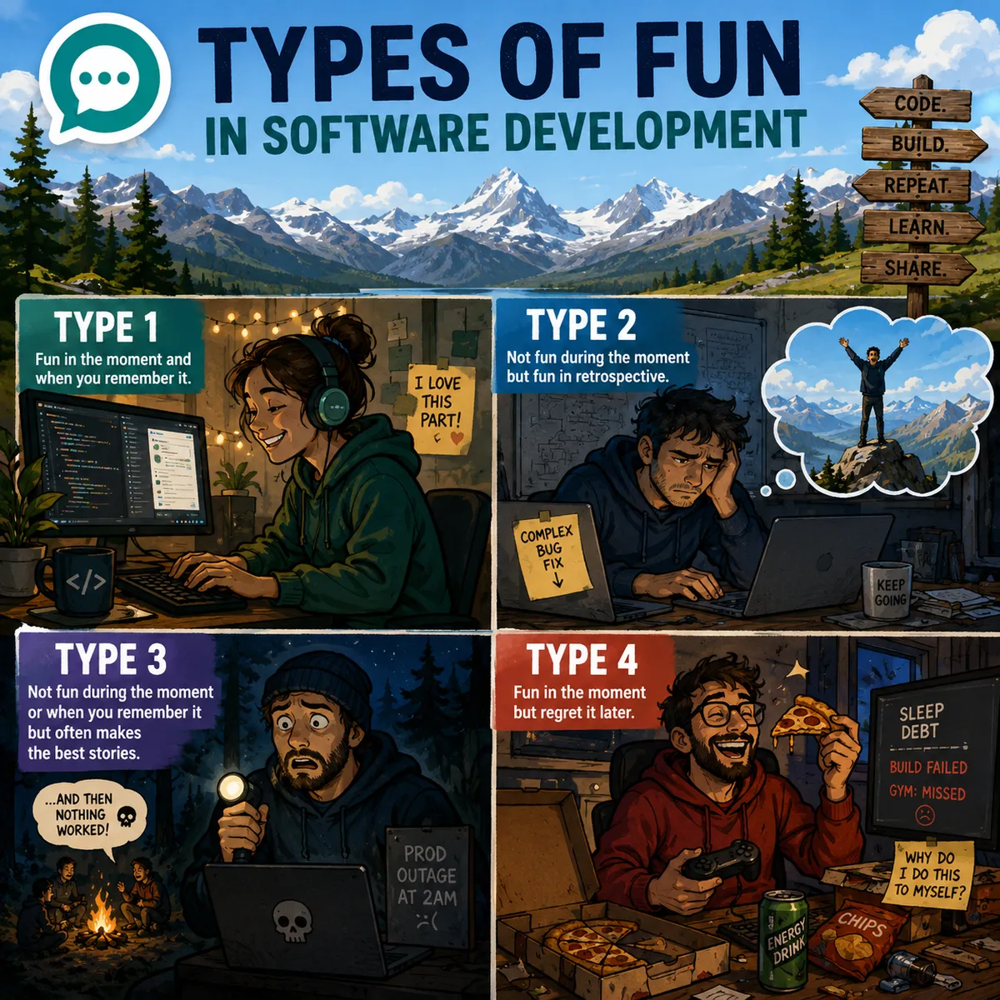

Types of fun in Software Development
Today's (2026-07-21) topic is applying the types of fun to software development. The 4 types of fun are:
-
Type 1: Fun in the moment and when you remember it.
Example: Stroll in the park on a nice day with friends. Would do it again in a heartbeat. -
Type 2: Not fun during the moment but is fun in retrospect.
Example: Hike to the top of a mountain on a hot day with some great views at the top. Get a feeling of accomplishment. -
Type 3: Not fun during the moment or when you remember it but often makes the best stories.
Example: Getting lost at night during a hike and your headlamp isn't working. Holy crap, that was more dangerous than I thought.
There is also a 4th type of fun that some people have added:
- Type 4: Fun in the moment but regret it later.
Example: Eating and drinking too much. Often counter to your long-term goals such as staying in shape.
What are some examples of the types of fun in Software Development? Inspired by me recently spending six days hiking to and around Mt. Assiniboine. It was definitely type 2 fun due to the long days of hiking, the mosquitoes, and crappy dehydrated food but great to remember.
Everyone and anyone is welcome to join as long as you are kind, supportive, and respectful of others.
P.S. - Image created by ChatGPT.
